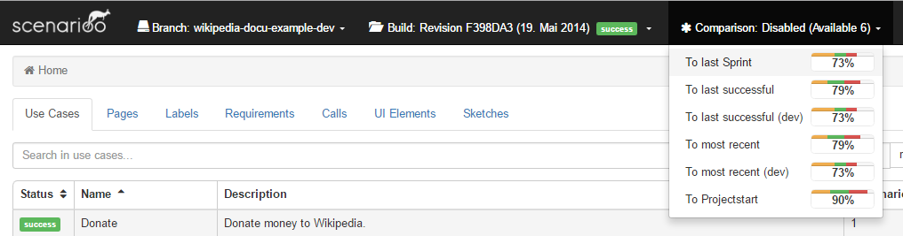
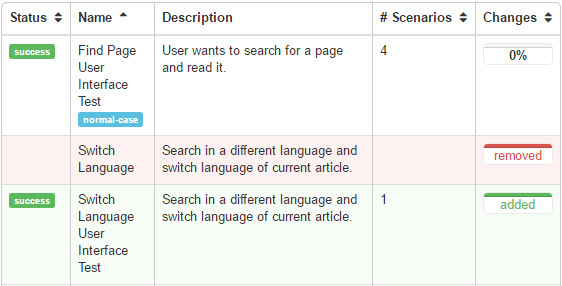
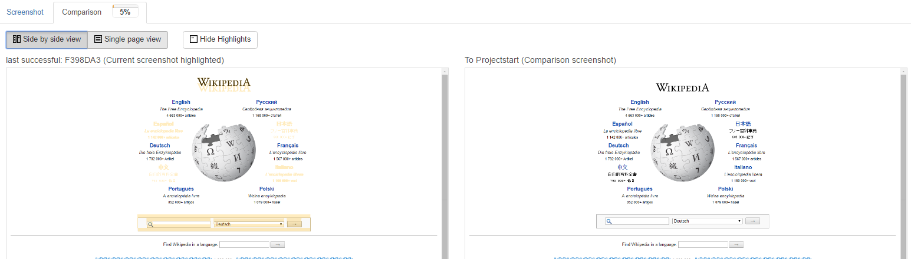
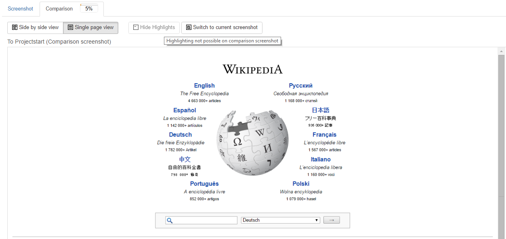

Diff Viewer User Guide
This guide describes how to use the Scenarioo Diff Viewer feature.
The Diff Viewer feature makes it possible to compare two different builds against each other.
Preconditions
- Make sure your scenarioo-server has the appropriate Diff Viewer configuration as described in the Diff Viewer Installation and Configuration Guide
- At least one build should have been compared to generate Diff Information data
Select a Comparison
If all the preconditions are met, you can start the Diff Viewer feature by selecting a comparison in the comparison menu. The comparison menu is located in the header next to the build selection menu. The name of the comparison was defined during the comparison configuration. If no comparison menu is shown, then no comparison is available or the preconditions are not fulfilled.
You can change the selected comparison at any time, on every layer. It does not matter if you are on the page view or on the use case overview. The Diff Viewer will show the difference between the two builds immediately. The selected comparison will be stored in your browser. Therefore you can reload the page without loosing your selected comparison.
The following screenshot shows the comparison menu on our Demo Site 
Interpret Changes
Diff Information is integrated into existing pages. You will see the Diff Information right next to each associated item. The information is displayed in a progress-bar like diff icon.
The following screenshot shows a diff icon example:

Color legend
- green: Number of new elements
- orange: Number of changed elements
- red: Number of removed elements
Change Rate
The percent number we use to call Change Rate. The Change Rate is an average value of all changes in the underlying elements. Added or removed elements will be calculated as 100% changed.
The length of the entire progress bar corresponds to the change rate. The length of each color progress bar corresponds to the number of changed elements.
Added and Removed Elements
Furthermore, added or removed elements are labeled accordingly. To ensure you recognize these elements immediately they are highlighted as in the following screenshot:

Compare Screenshots
You can open the screenshot comparison in the step view with a click on the tab named comparison.
Views
Diff Viewer provides you different views to compare a screenshot. You can switch between these two views:
Side by side view 
Single page view 
Naming
- Selected screenshot: The screenshot of the selected build
- Comparison screenshot: The screenshot of the selected comparison build
Refer to the glossary for further details:
Options
- Side by side view: Show the screenshots next to each other
- Single page view: Show one large screenshot
- Show highlights: Highlight differences between the screenshot
- Hide highlights: Do not show the highlighting
- Switch to selected screenshot: Show the selected screenshot in large
- Switch to comparison screenshot: Show the comparison screenshot in large
Disable Diff Viewer
On the same place where you selected a comparison, you can disable the diff viewer feature. Simply select 'disable' in the comparison selection menu: